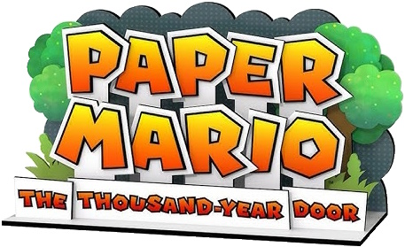

Paper Mario: The Thousand Year Old Door Remaster

| Release Date: | May 23rd, 2024 |
| Genre: | Turn-based RPG |
| Developer: | Intelligent Systems |
| Platform: | Nintendo Switch |
| Details: | Website |
This is a remastering of Paper Mario: The Thousand Year Door, originally for the Nintendo Gamecube. It's the second installment of the Paper Mario series, which puts Mario into an turn-based RPG type of game. I grew up with the original game, and would always come back to it every couple of years due to just how good the game it is. So when they announced they were remastering the game for the switch, I was ecstatic! It had been a while since I last played the game, so it was perfect timing for another playthrough.
Gameplay
Majority of the gameplay within this game is confined to the turn-based battle system that is common within RPGs. However, they changed the formula up slightly to make it more engaging and accessible for the player. When you perform an action against the enemy, you can perform some sort of button press to "time your hits" or to "aim your attack". Most of these actions are simple, but performing them correctly will increase the amount of damage you do! It's simple, but makes the battles feel much more engaging, as it allows the player to influence the outcome of their actions. The same goes for blocking your opponent's attacks, where you can guard right before they hit you, reducing the damage you take. You could perform a superguard instead, which is harder to time, but prevents taking any damage at all, returning damage to the enemy! Each action taken by yourself and the enemy has slight risk and reward tied to it, allowing the player to make decisions on the fly. It's so much more entertaining that other RPGs that don't have this system, as they feel like you're just navigating menus and hoping RNG plays in your favor.
Alongside the engagement of battle for the player, how damage is calculated is much simplier than other RPGs. Rather than weapons having damage ranges and randomness as to how much they'll do, this game's damage is all deterministic and relatively low in numbers. Starting the game off, you'll be doing about two damage a turn. However, health scales with this low damage output, where you'll start out with ten HP, and enemies may be around 2-3 HP. As the game progresses, health and damage will increase, but not so high where it doesn't mean a whole lot. Standard builds will output around 8-10 damage a turn near the end, with highly optimized builds reaching towards 18. They're low numbers, so every point of damage is meaningful, making those action commands all that more important to maximize your output. It removes randomness from combat, and replaces it with player skill, which I personally love. It makes it feel like I have control over the battle, rather than getting screwed over by a bad roll.
I mentioned above different builds you can use for Mario. With each level you reach, you can choose between 3 stats to increase: health, flower points (which act like mana for special skills), and badge points. The first two are pretty standard in RPGs, but badge points are fairly unique. As you explore the world, you'll obtain different kinds of badges that you can equip. Most badges require some amount of badge points to be used, with the stronger ones requiring more points. So the more you invest into your badge points, the more you have equipped at the same time, giving Mario access to more abilities to use inside and outside of battle! There's lots of different badges to choose from, allowing the player to build Mario in certain ways to make him stronger. It's a fun system that acts like the "equipment" of other RPGs, but just augments your current attacks to do something else.
Outside of battle, the game plays in a isometric 3D space and introduces other methods of gameplay to make exploring the world interesting. As it's a Mario game, it wouldn't be complete without some sort of platforming element. There's various different puzzles that you'll solve along the way, which keeps the game interesting and not just a walking simulator between fights. It helps make the world feel more alive, which we'll get into more depth here.
Story & Worldbuilding
The story of the game falls in-line with other Mario RPG games, where the main goal is to rescue Peach from some evil group. While expected for a Mario game, I think the pacing of the story is pretty well done. While it starts off fairly slow at the beginning, not a lot has been revealed to the player at that time. As the game progresses, more clues are dropped to the player, until it culminates at the end for a grand finale. Each chapter also differs greatly from each other, ranging from partaking in a gladiator tournament to solving crime as a detective. They're all working toward the same end goal, but switches up the setting to keep things fresh.
Mario isn't experiencing this adventure on his own, as he meets a wide range of characters who join him on his quest! These companions aid Mario in his quest through combat, but also aids him in the overworld with their unique abilities. Besides their functional purposes, they also have a lot of flavor text that they have to say throughout the adventure, usually adding their own input during cutscenes. You learn quite a bit about them prior to recruiting them, as you'll have to complete some sort of quest for them, but they're all fairly fleshed out characters with very clear personalities.
Outside of the main characters, the world is filled with NPCs living their lives. While there's tons of the main Mario species, a lot of them adorn unique looks to fit the setting of where they reside or their occupation. It makes them feel more apart of the world, rather than just a horde of goombas chilling at the bar. There's also a ton of new species within the game, which makes sense since the game takes place outside of the Mushroom Kingdom. While more are standard NPCs that have their one line they say over and over, the game try to make them feel more alive by having a lot of mini-quests involving random characters. While they're not much, it gives these unassuming NPCs a moment in the spotlight, making them feel more connected to the world.
The game does a great job of their NPCs and worldbuilding, but I feel like the one place in which the game lacks is with the enemy design. There's a lot of different types of enemies throughout the game, many of which are unique to this game specifically. However, they tend to reuse some species a lot, just recoloring them and changing their stats. I wouldn't have a problem with this for a few of them, makes sense that there'd be different species of goombas in different areas of the world, but they do this A LOT. Sometimes even in the same area! It would've gone a long way for them to give the enemies the same treatment that they gave the NPCs, with unique species in each chapter.
Remastered Aspects
Usually I talk about the visuals and audio, but that's the main thing that this remaster addressed. In the original game, the visuals were great for their time and the music was phenomenal. This remaster though, it's so so much better. The new rendering engine does so much for the different areas throughout the game, further enhancing how detailed each area felt. The textures now have proper emissive and reflective properties, making everything feel so much more stylized without taking really anything away from the artstyle. The remastered tracks are fantastic, and they've added a lot of new ones! Each chapter now have a unique battle theme to fit their setting and some cutscenes now have unique tracks that they didn't have in the original. They've outdone themselves here, really bringing this fantastic game into the modern era.
Alongside the visual and audio enhancements, the game also introduces some quality of life improvements. It's now much easier to swap between different partners, no longer having to go digging through the pause menu. The game does feature a lot of backtracking in general, but this version improves this process by making fast travel more accessible to the player and introduces various shortcuts between locations in individual chapters. There are a couple of timing changes to the badges which makes them harder to use, but they included Training Toad, where you have unlimited resources to practice your attacks, so could've done that to get used to them.
Overall Thoughts
This game is the pinnacle of Mario RPGs in my opinion. The combat system feels engaging, addressing my biggest criticism with turn-based RPGs. The inclusion of the badge system gives you many different methods of approaching battles, allowing you to fight in your preferred style. The story itself is fairly simple, the characters within the world really make it shine with their dialog and personalities bouncing off each other. The game doesn't take itself too seriously, which I think is the right way to approach a Mario game. With the improved visuals, audio, and quality of life aspects brought in with the remaster, this version of the game is the best way to experience this story. This game is highly rated amongst players, despite the original being nearly twenty years old, so this remaster allows people a more accessible way to experience this masterpiece from the GameCube era.